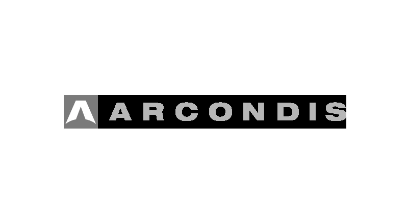
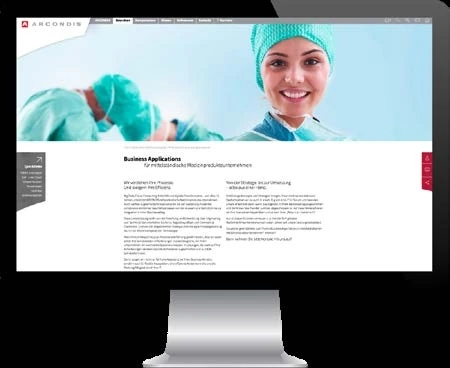
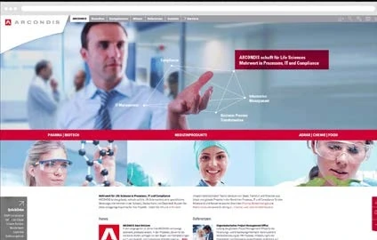
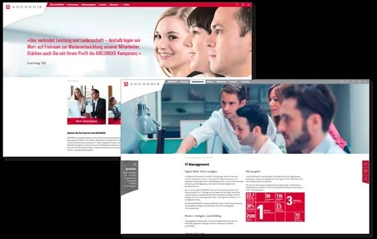

Eine präzise visuelle Identität und eine klare UX-Struktur übersetzen komplexe regulierte Dienstleistungen in einen vertrauenswürdigen Markenauftritt.

Branding · Life Science IT
ARCONDIS Brand Identity
Brand Identity und Website für ein auf Life Sciences spezialisiertes IT-Beratungsunternehmen.
Eine ähnliche Idee?
Ähnliches Projekt anfragenLogo, Brand Design und Website. Basel · 2015
Logoentwicklung, Identity-Entwicklung, UX-Design und Prototyping.
Projekt für ARCONDIS.


